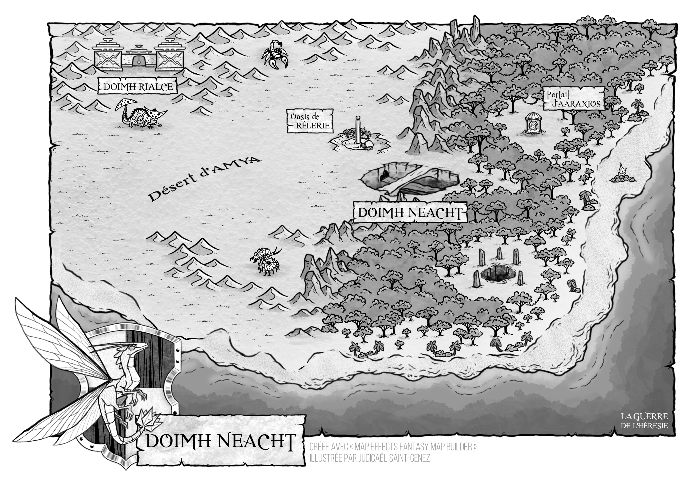

✦ ARCHIVES DES MONDES ✦
Doimh Neacht
La planète des Sables
Tracé des Mondes

✧ Cliquer sur l’image pour voir ou télécharger le PNG original✧ Registre ✧
- Nom
- Doimh Neacht
- Détail
- Planète désertique
- Peuple
- Doimhiens
- Territoire
- Tracé des Mondes
- Capitale
- Doimh Neacht
- Population
- ~ 200 000
- Divinité
- Dame Sillia
Présentation
Doimh Neacht est une planète désertique située au cœur du Tracé des Mondes, une région neutre qui s’étend entre les territoires de l’Union Royale et des Escouades Divines. Sa capitale, également nommée Doimh Neacht, est une cité majestueuse creusée dans les profondeurs du désert, à l’abri des vastes étendues de sable qui recouvrent la planète. Ce monde abrite les Doimhiens, un peuple pacifique dont la perception et la compréhension des émotions diffèrent profondément de celles des autres peuples. Cette singularité constitue l’une des caractéristiques les plus remarquables de leur civilisation.
Apparences
Doimh Neacht est une planète du Tracé des Mondes caractérisée par un climat particulièrement chaud et des paysages contrastés. À l’est s’étend une vaste forêt tropicale, dense et humide, tandis que l’ouest est dominé par un immense désert aride. À la frontière de ces deux territoires se dresse la capitale, qui porte le même nom que la planète, Doimh Neacht.
Un vaste océan borde les terres à l’est et au sud, longeant aussi bien les côtes tropicales que les étendues désertiques. La planète abrite également deux Portails d’Aaraxios ainsi que plusieurs temples antiques, témoins du passé d’une ancienne civilisation.
Histoire
Durant son premier âge, Doimh Neacht était un monde isolé, jusqu’à ce qu’Aarax le relie au Tracé des Mondes au cours de l’Ère de l’Incertitude. L’arrivée d’êtres provenant d’autres mondes et leur cohabitation avec la population locale bouleversèrent profondément la planète, provoquant notamment la chute de son ancienne capitale.
Doimh Neacht possède également un riche héritage religieux, profondément ancré dans son histoire et ses traditions. Placé sous la protection divine de Dame Sillia, Déesse de la Foudre, le monde lui voue une profonde vénération.
Apparition
Doimh Neacht est un monde du chapitre 33, « Un Voyage Au Reflet Rubis », dans le quatrième livre de La Guerre de l’Hérésie, « L’Ordre de l’Hérésie ».
✦ POURSUIVRE DANS LES ARCHIVES ✦